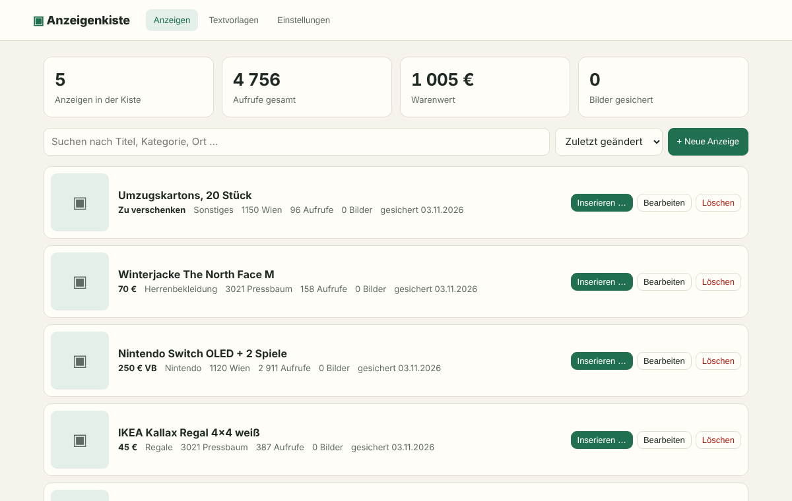

<title>Anzeigenkiste</title>
<meta name="claude:viewport-fit-sides" content="cover">
<meta name="description" content="Freie Browsererweiterung für Kleinanzeigen: Anzeigen sichern, neu inserieren, Textvorlagen nutzen und zu Vinted, eBay oder willhaben übertragen. Open Source, ohne Konto, ohne Abo.">
<link rel="preconnect" href="https://fonts.googleapis.com">
<link rel="preconnect" href="https://fonts.gstatic.com" crossorigin>
<link rel="stylesheet" href="https://fonts.googleapis.com/css2?family=Bricolage+Grotesque:opsz,wght@12..96,500;12..96,700;12..96,800&family=Atkinson+Hyperlegible:wght@400;700&family=JetBrains+Mono:wght@400;600&display=swap">
<style>
/* Layout: eine Spalte, Sektionen als breite Bänder; Preisschild-Sticker als einziges lautes Element */
:root {
  --paper: #f4f6f3;
  --surface: #ffffff;
  --ink: #15261e;
  --muted: #52635a;
  --line: #d7dfd9;
  --forest: #1f6f50;
  --forest-ink: #ffffff;
  --tag: #f5c736;
  --tag-ink: #1d1a0c;
  --band: #e6ede8;
  --code-bg: #15261e;
  --code-fg: #dfeae3;
  --display: "Bricolage Grotesque", "Avenir Next", "Segoe UI", system-ui, sans-serif;
  --body: "Atkinson Hyperlegible", "Segoe UI", system-ui, sans-serif;
  --mono: "JetBrains Mono", ui-monospace, "SFMono-Regular", Menlo, monospace;
}
@media (prefers-color-scheme: dark) {
  :root:not([data-theme="light"]) {
    --paper: #101814; --surface: #17221c; --ink: #e6eee9; --muted: #9db0a5; --line: #2a3a31;
    --forest: #5cc596; --forest-ink: #0d1a13; --tag: #f0c234; --tag-ink: #1d1a0c; --band: #141f19;
    --code-bg: #0b120e; --code-fg: #cfe0d6; color-scheme: dark;
  }
}
:root[data-theme="dark"] {
  --paper: #101814; --surface: #17221c; --ink: #e6eee9; --muted: #9db0a5; --line: #2a3a31;
  --forest: #5cc596; --forest-ink: #0d1a13; --tag: #f0c234; --tag-ink: #1d1a0c; --band: #141f19;
  --code-bg: #0b120e; --code-fg: #cfe0d6; color-scheme: dark;
}

* { box-sizing: border-box; }
body { background: var(--paper); color: var(--ink); font: 17px/1.6 var(--body); }
a { color: var(--forest); text-underline-offset: 3px; }
a:focus-visible, button:focus-visible { outline: 3px solid var(--tag); outline-offset: 2px; border-radius: 6px; }

.wrap { max-width: 1080px; margin: 0 auto; padding-left: max(16px, env(safe-area-inset-left, 0px)); padding-right: max(16px, env(safe-area-inset-right, 0px)); }
.band { padding-block: 72px; }
.band--tint { background: var(--band); }

h1, h2, h3 { font-family: var(--display); text-wrap: balance; letter-spacing: -0.02em; margin: 0; }
h1 { font-size: clamp(2.6rem, 6.4vw, 4.6rem); line-height: 1.02; font-weight: 800; }
h2 { font-size: clamp(1.8rem, 3.6vw, 2.6rem); line-height: 1.1; font-weight: 700; }
h3 { font-size: 1.2rem; line-height: 1.25; font-weight: 700; letter-spacing: -0.01em; }
p { margin: 0; }
.lead { font-size: 1.18rem; color: var(--muted); max-width: 58ch; }
.eyebrow { font: 600 0.78rem/1 var(--mono); text-transform: uppercase; letter-spacing: 0.12em; color: var(--forest); }

/* Kopfzeile */
body::before { content: ""; position: fixed; inset: 0 0 auto; height: env(safe-area-inset-top, 0px); z-index: 10; background: var(--paper); }
.top { position: sticky; top: env(safe-area-inset-top, 0px); z-index: 5; background: color-mix(in srgb, var(--paper) 88%, transparent); backdrop-filter: blur(8px); border-bottom: 1px solid var(--line); }
.top .wrap { display: flex; align-items: center; gap: 20px; padding-block: 14px; }
.brand { display: flex; align-items: center; gap: 10px; font: 800 1.15rem/1 var(--display); color: var(--ink); text-decoration: none; }
.brand img { width: 30px; height: 30px; border-radius: 8px; }
.top nav { margin-left: auto; display: flex; gap: 18px; flex-wrap: wrap; font-size: 0.95rem; }
.top nav a { color: var(--muted); text-decoration: none; }
.top nav a:hover { color: var(--ink); }
@media (max-width: 560px) { .top nav a:not(.gh) { display: none; } }

/* Knöpfe */
.btns { display: flex; gap: 12px; flex-wrap: wrap; }
.btn { display: inline-flex; align-items: center; gap: 8px; padding: 13px 20px; border-radius: 10px; font: 700 1rem/1 var(--body); text-decoration: none; border: 2px solid var(--ink); color: var(--ink); background: transparent; cursor: pointer; transition: transform .15s ease, background .15s ease; }
.btn:hover { transform: translateY(-2px); }
.btn--solid { background: var(--forest); border-color: var(--forest); color: var(--forest-ink); }

/* Hero */
.hero { padding-block: 64px 40px; display: grid; gap: 40px; }
.hero__text { display: grid; gap: 22px; max-width: 760px; }
.hero h1 em { font-style: normal; position: relative; white-space: nowrap; }
.hero h1 em::after { content: ""; position: absolute; left: -4px; right: -4px; bottom: 0.08em; height: 0.28em; background: var(--tag); z-index: -1; border-radius: 3px; }
.hero h1 { isolation: isolate; }
.facts { display: flex; gap: 10px 22px; flex-wrap: wrap; font: 0.88rem/1.4 var(--mono); color: var(--muted); }
.facts span::before { content: "✓ "; color: var(--forest); font-weight: 600; }

.shot { position: relative; }
.shot img { display: block; width: 100%; max-width: 100%; height: auto; border-radius: 14px; border: 1px solid var(--line); box-shadow: 0 30px 60px -30px rgba(21, 38, 30, .45); }
.tag-sticker { position: absolute; top: -22px; right: 6%; display: grid; place-items: center; text-align: center; width: 128px; height: 128px; border-radius: 50%; background: var(--tag); color: var(--tag-ink); transform: rotate(9deg); font-family: var(--display); box-shadow: 0 10px 24px -10px rgba(0,0,0,.4); }
.tag-sticker b { display: block; font-size: 2.3rem; line-height: .9; font-weight: 800; }
.tag-sticker small { display: block; font: 600 .72rem/1.25 var(--mono); text-transform: uppercase; letter-spacing: .06em; margin-top: 4px; }
@media (max-width: 560px) { .tag-sticker { width: 92px; height: 92px; top: -30px; } .tag-sticker b { font-size: 1.6rem; } .tag-sticker small { font-size: .6rem; } }

/* Funktionen */
.sec-head { display: grid; gap: 12px; margin-bottom: 36px; }
.features { display: grid; grid-template-columns: repeat(auto-fit, minmax(240px, 1fr)); gap: 16px; }
.feature { background: var(--surface); border: 1px solid var(--line); border-radius: 14px; padding: 24px; display: grid; gap: 10px; align-content: start; min-width: 0; }
.feature p { color: var(--muted); }
.label { justify-self: start; font: 600 .74rem/1 var(--mono); padding: 6px 9px 6px 14px; background: var(--tag); color: var(--tag-ink); border-radius: 3px 8px 8px 3px; position: relative; }
.label::before { content: ""; position: absolute; left: 5px; top: 50%; width: 4px; height: 4px; margin-top: -2px; border-radius: 50%; background: var(--paper); }

/* Ablauf: echte Reihenfolge */
.steps { list-style: none; margin: 0; padding: 0; display: grid; grid-template-columns: repeat(auto-fit, minmax(230px, 1fr)); gap: 28px; counter-reset: step; }
.steps li { counter-increment: step; display: grid; gap: 8px; border-top: 2px solid var(--ink); padding-top: 18px; min-width: 0; }
.steps li::before { content: counter(step); font: 800 2.6rem/1 var(--display); color: var(--forest); }
.steps p { color: var(--muted); }

/* Open Source */
.split { display: grid; grid-template-columns: 1fr 1fr; gap: 48px; align-items: start; }
.split > * { min-width: 0; }
@media (max-width: 820px) { .split { grid-template-columns: 1fr; gap: 32px; } }
.checks { list-style: none; padding: 0; margin: 20px 0 0; display: grid; gap: 10px; }
.checks li { padding-left: 30px; position: relative; }
.checks li::before { content: "✓"; position: absolute; left: 0; top: 0; width: 22px; height: 22px; border-radius: 50%; background: var(--forest); color: var(--forest-ink); font-size: .8rem; display: grid; place-items: center; font-weight: 700; }
.code { background: var(--code-bg); color: var(--code-fg); border-radius: 14px; overflow: hidden; }
.code__bar { display: flex; justify-content: space-between; align-items: center; padding: 10px 14px; border-bottom: 1px solid rgba(255,255,255,.08); font: .78rem/1 var(--mono); opacity: .8; }
.code__bar button { font: 600 .78rem/1 var(--mono); background: none; border: 1px solid rgba(255,255,255,.25); color: inherit; border-radius: 6px; padding: 6px 9px; cursor: pointer; }
.code pre { margin: 0; padding: 18px; overflow-x: auto; font: .88rem/1.7 var(--mono); }
.code .c { opacity: .55; }

/* Fragen */
.faq { display: grid; gap: 10px; max-width: 820px; }
.faq details { background: var(--surface); border: 1px solid var(--line); border-radius: 12px; padding: 4px 20px; }
.faq summary { cursor: pointer; padding: 14px 0; font: 700 1.05rem/1.35 var(--display); list-style: none; display: flex; justify-content: space-between; gap: 16px; }
.faq summary::-webkit-details-marker { display: none; }
.faq summary::after { content: "+"; font-family: var(--mono); color: var(--forest); }
.faq details[open] summary::after { content: "–"; }
.faq details p { padding: 0 0 16px; color: var(--muted); max-width: 66ch; }

/* Abschluss & Fuß */
.cta { text-align: left; display: grid; gap: 20px; justify-items: start; }
footer { border-top: 1px solid var(--line); padding-block: 32px 48px; font-size: .9rem; color: var(--muted); }
footer .wrap { display: grid; gap: 10px; }
footer nav { display: flex; gap: 18px; flex-wrap: wrap; }

@media (prefers-reduced-motion: reduce) { .btn { transition: none; } .btn:hover { transform: none; } }
</style>

<header class="top">
  <div class="wrap">
    <a class="brand" href="#"> Anzeigenkiste</a>
    <nav aria-label="Hauptnavigation">
      <a href="#funktionen">Funktionen</a>
      <a href="#ablauf">So geht’s</a>
      <a href="#fragen">Fragen</a>
      <a class="gh" href="https://github.com/binkeinarzt/anzeigenkiste">GitHub</a>
    </nav>
  </div>
</header>

<main>
  <section class="wrap hero">
    <div class="hero__text">
      <span class="eyebrow">Open Source · für Chrome, Edge und Firefox</span>
      <h1>Deine Anzeigen. In <em>einer Kiste.</em></h1>
      <p class="lead">Sichere deine Kleinanzeigen mit Text und Bildern, stell sie mit einem Klick neu ein und übertrag sie zu Vinted, eBay, willhaben, Facebook, markt.de oder Quoka. Ohne Konto, ohne Abo, ohne Server.</p>
      <div class="btns">
        <a class="btn btn--solid" href="https://github.com/binkeinarzt/anzeigenkiste/releases">Erweiterung herunterladen</a>
        <a class="btn" href="https://github.com/binkeinarzt/anzeigenkiste">Quellcode ansehen</a>
      </div>
      <div class="facts"><span>MIT-Lizenz</span><span>Daten bleiben im Browser</span><span>Keine Tracker</span></div>
    </div>
    <div class="shot">
      
      <div class="tag-sticker" aria-hidden="true"><div><b>0 €</b><small>kein VB,<br>einfach gratis</small></div></div>
    </div>
  </section>

  <section class="band band--tint" id="funktionen">
    <div class="wrap">
      <div class="sec-head">
        <span class="eyebrow">Funktionen</span>
        <h2>Was die Kiste für dich erledigt</h2>
      </div>
      <div class="features">
        <article class="feature">
          <span class="label">Speichern</span>
          <h3>Anzeigen sichern</h3>
          <p>Ein Knopf auf jeder Anzeige speichert Titel, Beschreibung, Preis, Kategorie und alle Bilder. Auf „Meine Anzeigen“ sicherst du alle auf einmal.</p>
        </article>
        <article class="feature">
          <span class="label">Neu inserieren</span>
          <h3>Formular ausfüllen lassen</h3>
          <p>Anzeige abgelaufen oder gelöscht? Die Kiste füllt „Anzeige aufgeben“ samt Bildern aus. Kategorie prüfen, absenden, fertig.</p>
        </article>
        <article class="feature">
          <span class="label">Übertragen</span>
          <h3>Auf sechs weitere Plattformen</h3>
          <p>Vinted, eBay, willhaben, Facebook Marketplace, markt.de und Quoka ankreuzen: Für jede öffnet sich ein Tab mit ausgefülltem Formular samt Bildern.</p>
        </article>
        <article class="feature">
          <span class="label">Postfach</span>
          <h3>Textvorlagen per Klick</h3>
          <p>„Ist noch da“, „Preis ist fest“, „Versand möglich“: deine Antworten liegen direkt über dem Nachrichtenfeld. Beliebig viele, alle anpassbar.</p>
        </article>
        <article class="feature">
          <span class="label">Übersicht</span>
          <h3>Alles im Blick</h3>
          <p>Alle Anzeigen in einer Liste mit Aufrufen, Preis, Ort und Schlagwörtern. Suchen, sortieren, bearbeiten oder eigene Anzeigen anlegen.</p>
        </article>
        <article class="feature">
          <span class="label">Gegenrichtung</span>
          <h3>Von Vinted, eBay, willhaben holen</h3>
          <p>Auf Artikelseiten dieser Plattformen speicherst du per Knopf in die Kiste und stellst den Artikel danach auf Kleinanzeigen ein.</p>
        </article>
        <article class="feature">
          <span class="label">Sicherung</span>
          <h3>Deine Daten, deine Datei</h3>
          <p>Exportier die ganze Kiste als JSON-Datei und spiel sie auf einem anderen Rechner wieder ein. Kein Konto nötig.</p>
        </article>
      </div>
    </div>
  </section>

  <section class="band" id="ablauf">
    <div class="wrap">
      <div class="sec-head">
        <span class="eyebrow">So geht’s</span>
        <h2>Von der alten Anzeige zur neuen in drei Schritten</h2>
      </div>
      <ol class="steps">
        <li><h3>Anzeige öffnen und sichern</h3><p>Unter dem Preis erscheint „In Anzeigenkiste speichern“. Ein Klick, und Text und Bilder liegen in der Kiste.</p></li>
        <li><h3>In der Kiste anpassen</h3><p>Preis senken, Text verbessern, Bilder tauschen. Alles bleibt gespeichert, auch wenn die Anzeige online längst weg ist.</p></li>
        <li><h3>Neu einstellen oder übertragen</h3><p>Unter „Inserieren“ wählst du die Plattformen. Jede öffnet sich mit ausgefülltem Formular, du prüfst und veröffentlichst.</p></li>
      </ol>
    </div>
  </section>

  <section class="band band--tint" id="open-source">
    <div class="wrap split">
      <div>
        <span class="eyebrow">Open Source</span>
        <h2 style="margin-top:12px">Kein Abo, keine Cloud, kein Haken</h2>
        <ul class="checks">
          <li>Der komplette Quellcode liegt offen auf GitHub, unter MIT-Lizenz.</li>
          <li>Alle Anzeigen und Bilder bleiben im Speicher deines Browsers.</li>
          <li>Die Erweiterung schickt nichts an fremde Server, auch keine Statistik.</li>
          <li>Abschicken musst du immer selbst. Die Kiste klickt nie für dich auf „Veröffentlichen“.</li>
        </ul>
      </div>
      <div class="code">
        <div class="code__bar"><span>Selbst bauen</span><button type="button" id="copy-btn">Kopieren</button></div>
        <pre id="code-block"><code>git clone https://github.com/binkeinarzt/anzeigenkiste
cd anzeigenkiste
npm install
npm run build
<span class="c"># Chrome: chrome://extensions → Entwicklermodus
#   → „Entpackte Erweiterung laden“ → dist/chrome
# Firefox: about:debugging → Temporäres Add-on
#   → dist/firefox/manifest.json</span></code></pre>
      </div>
    </div>
  </section>

  <section class="band" id="fragen">
    <div class="wrap">
      <div class="sec-head">
        <span class="eyebrow">Fragen</span>
        <h2>Gut zu wissen</h2>
      </div>
      <div class="faq">
        <details><summary>Was kostet Anzeigenkiste?</summary><p>Nichts. Es gibt keine Bezahlstufen, keine Grenzen bei der Anzahl der Anzeigen und keine Werbung.</p></details>
        <details><summary>Wo liegen meine Daten?</summary><p>Ausschließlich im lokalen Speicher deines Browsers. Wenn du die Erweiterung deinstallierst, sind sie weg. Lade vorher unter „Einstellungen“ eine Sicherung herunter.</p></details>
        <details><summary>Ist die Nutzung erlaubt?</summary><p>Die Kiste liest nur Seiten aus, die du selbst öffnest, und füllt Formulare aus, die du selbst abschickst. Kleinanzeigen untersagt in seinen Nutzungsbedingungen automatisierte Zugriffe. Deshalb verlängert oder veröffentlicht die Erweiterung nichts automatisch. Die Verantwortung für deinen Account trägst du selbst.</p></details>
        <details><summary>Warum klappt das Ausfüllen manchmal nicht?</summary><p>Die Plattformen ändern ihre Seiten regelmäßig. Dann greifen die Kopier-Knöpfe im Panel. Die Selektoren für Kleinanzeigen stehen gesammelt in einer Datei, damit Anpassungen schnell gehen. Pull Requests sind willkommen.</p></details>
        <details><summary>Gibt es eine Handy-Version?</summary><p>Nein. Die Erweiterung läuft in Chrome, Edge, Brave und Firefox am Computer.</p></details>
      </div>
    </div>
  </section>

  <section class="band band--tint">
    <div class="wrap cta">
      <h2>Räum deine Anzeigen auf.</h2>
      <p class="lead">Installieren, eine Anzeige sichern, ausprobieren. Dauert zwei Minuten.</p>
      <div class="btns">
        <a class="btn btn--solid" href="https://github.com/binkeinarzt/anzeigenkiste/releases">Erweiterung herunterladen</a>
        <a class="btn" href="https://github.com/binkeinarzt/anzeigenkiste/issues">Fehler melden</a>
      </div>
    </div>
  </section>
</main>

<footer>
  <div class="wrap">
    <nav aria-label="Rechtliches">
      <a href="https://github.com/binkeinarzt/anzeigenkiste">GitHub</a>
      <a href="https://github.com/binkeinarzt/anzeigenkiste/blob/main/LICENSE">MIT-Lizenz</a>
      <a href="impressum.html">Impressum</a>
      <a href="datenschutz.html">Datenschutz</a>
    </nav>
    <p>Anzeigenkiste ist ein unabhängiges Open-Source-Projekt und steht in keiner Verbindung zu Kleinanzeigen, Vinted, eBay, willhaben, Meta, markt.de oder Quoka. Alle Marken gehören ihren Inhabern.</p>
  </div>
</footer>

<script>
  document.getElementById("copy-btn").addEventListener("click", async (e) => {
    const text = document.getElementById("code-block").innerText;
    try { await navigator.clipboard.writeText(text); e.target.textContent = "Kopiert"; }
    catch { const r = document.createRange(); r.selectNodeContents(document.getElementById("code-block")); const s = getSelection(); s.removeAllRanges(); s.addRange(r); e.target.textContent = "Markiert"; }
    setTimeout(() => (e.target.textContent = "Kopieren"), 1800);
  });
</script>
